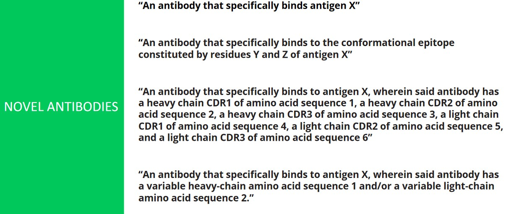
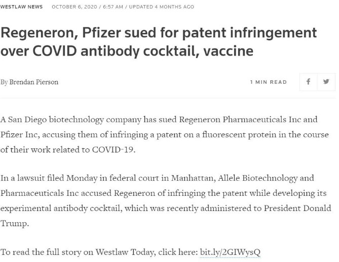
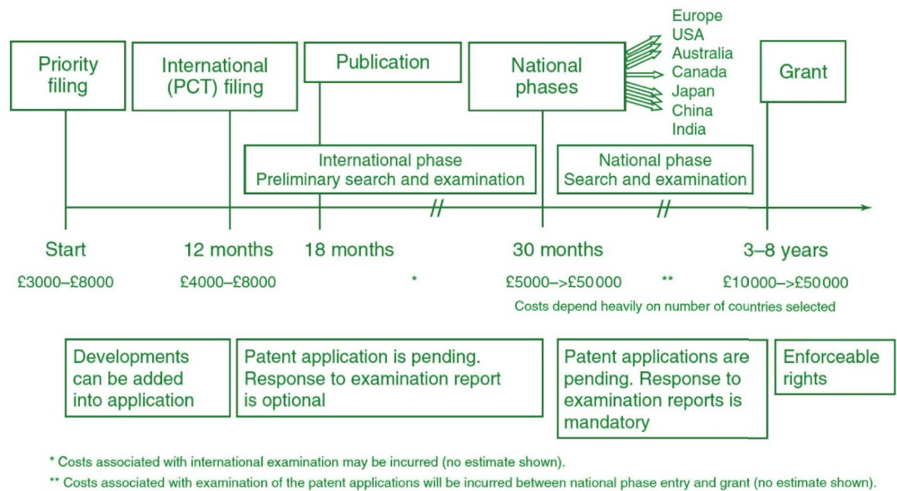
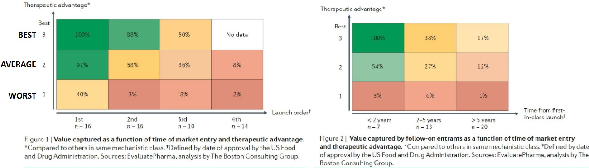
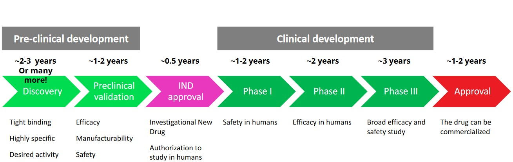
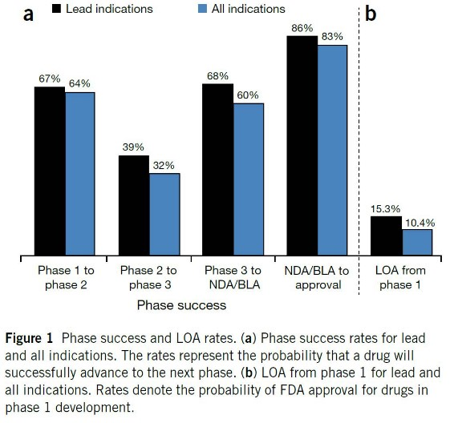
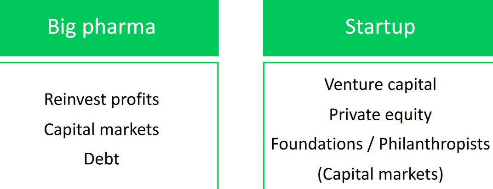
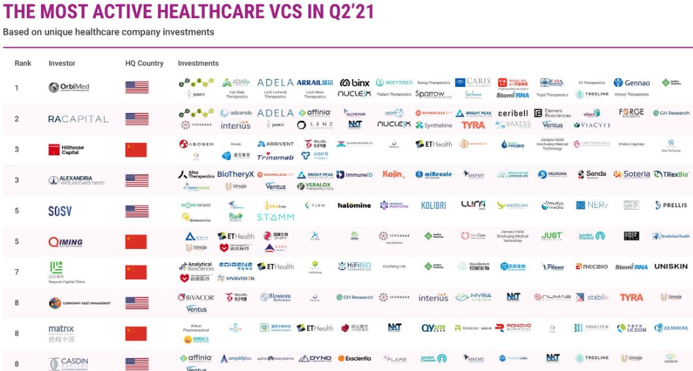
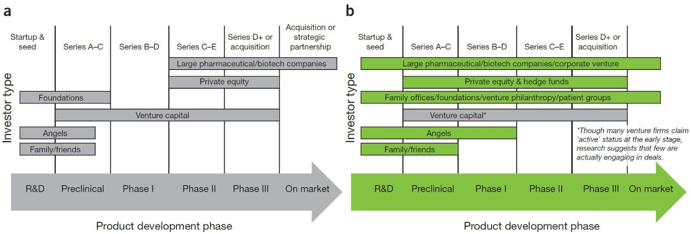

5 Clinical Development of Antibodies
This week’s lecture covers the following topics:
- Patenting an antibody
- Studying the competition landscape
- Clinical development paths
- Funding clinical developments
- Finding partners
5.1 Patenting Antibodies
Patents exist for the following reasons:
- To enjoy exclusive rights for use and commercialization
- To fend off competition
- To generate product revenue via licensing or selling (either to consumers or stakeholders).
However, in the antibody field, patents can usually be awarded for one of four main categories:
Novel antibodies
These refer to antibodies with new sequences or antibodies that target new epitopes.
Novel therapeutic antibodies
This refers to the use of an antibody to treat a specific disease.
Antibody modifications
For instance, stabilizing mutations.
Methodologies
This may involve new screening technologies, new production methods, new diagnostic tools, and so on.
Depending on where the product is made, a patent attorney made need to be approached in the private sector. In academic settings like NTU, the university’s patent office should be engaged1.
Patents are generally sought prior to disclosing one’s invention publicly
5.1.1 Characteristics of Patents
Patents are defined by claims
Some Example Patent Claims The above graphic provides some examples.
They have a priority and a due date
The due date is typically 20 years past the priority date.
They provide monopoly rights to an invention
They prohibit others from performing certain acts without the stakeholders’ permission

Pfizer Being Sued Over Patent Infringements The pharmaceutical industry is crowded with patents. If an infringement occurs, the patent holder can take legal actions.
Patent attorneys can help avoid such surprises by doing a freedom-to-operate search and analysis.
They are limited to the territory that they are granted in
If a patent prohibits one from commercializing their discoveries, they can:
Try to find a way around the patent
For instance, use an alternative method.
Pay to use the patent
For instance, pay for a license.
Strike a deal
They can establish a partnership with the company that holds the patent.
Challenge the patent
If one of the patent’s claims has limited foundation, one can also try to invalidate them.
Whatever the case, always consult the patent attorney first!
5.1.2 Patenting Timeline and Costs

5.2 Competition Landscapes

If a best-in-class drug arrives to the market second, it loses about 12% of its potential financial returns. A drug of average efficacy can capture 92% of a best-in-class drug’s value just by being in first class.
If it not possible to arrive first, then the best-in-class drug should arrive no later than two years to capture its potential. After two to five years, a best-in-class drug would have lost over 40% of its maximum potential value.
5.3 Planning Clinical Developments

It generally takes about 12 years and depending on the drug, as much as 50 million USD to develop a drug from its discovery to its market authorization.
Because of this, the total cost for pharmaceutical companies to bring a successful drug into the market is about 1.3 to 2.6 billion USD.
5.3.1 Success Rates

Prof. Asial lists some fundmental statistics regarding the passing rate for drugs:
- 30% of drugs fail in phases I and III.
- 60% of drugs fail in phase II.
Therefore, the overall chances of a drug being approved is about 15%.
5.4 Funding Clinical Developments

Depending on whether or not one is a big pharmaceutical company or a startup, there are numerous sources of funding (as shown above).
5.4.1 Venture Capital

This is the act of selling a percentage of your company for funding. A reputable investor can also provide than just money: experience, contacts, ideas, and more.
Such funding typically happens in stages.

There are many options for funding in various stages of drug development.
5.5 Finding Partners
Contract Research Organizations (i.e., CROs)
CROs can perform research as a service and can be most cost and time effective than performing in-house research.
CROs are generally used for tasks such as efficacy studies, assay development and executions, and production for research purposes.
Contract Developing and Manufacturing Organizations (i.e., CDMOs)
These firms perform late-preclinical and clinical research as a service. These firms can also be more cost and time effective.
CDMOs typically provide services such as cell line development, GMP process development, GMP production, and pre-clinical and clincal safety and efficacy.
Pharmaceutical Companies
A partnership with a pharmaceutical company can be crucial for project success. Like the previous two examples, pharmaceutical companies can be more time and cost efficient than in-house operations.
Pharmaceutical companies can provide extensive experience, external recognition, funding, and market access.
In the case of NTU, it’s NTUitive Pte. Ptd.↩︎